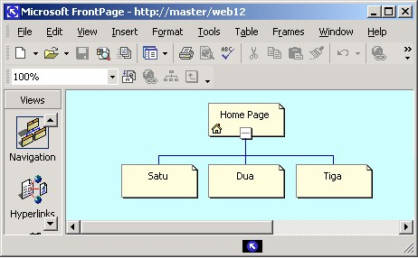
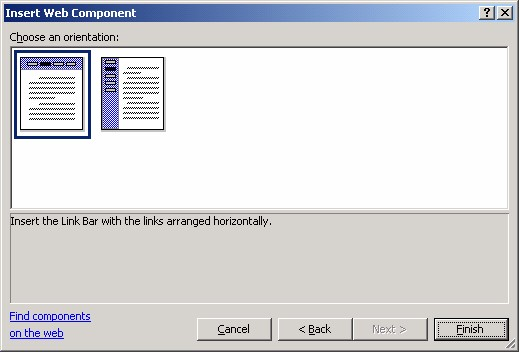
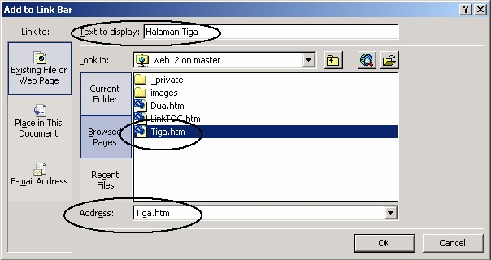

1 Membuat Link Bar
Link Bar adalah bar yang terletak di bagain atas halaman dan bertugas menampung
link-link yang ada. Link bar sering disbut juga dengan Navigator. Komponen ini
akan muncul pada seluruh halaman di dalam situs.
Gambar 13.1 Contoh Link bar
1.1 Langkah membuat link bar
Langkah pemasangan link bar adalah:
1. Buatlah sebuah situs bernama Web13a dengan jenis web satu halaman (One
Page Site). Caranya: Aktifkan File è New Page or Site. Klik icon One Page
Site pada task pane.
2. Tampilkan navigation View. Dengan cara klik icon Navigation.
3. Buatlah tiga halaman di bawah Home Page.
4. Namailah dengan Satu, Dua dan Tiga. Lihat Gambar 13.2.

Gambar 13.2 Strutur navigasi situs
5. Klik ganda icon Home Page sehingga halaman tersebut terbuka.
6. Pasangkan tema Arcs pada Home Page. Aktifkan Format è Theme…Pada
kotak dialog Themes, aktifkan palihan Selected page(s) dan Arcs, lalu OK.
Gambar 13.3 Pilihan pada kotak dialog Themes
7. Gantilah Page Banner menjadi Ini Home Page. Caranya: aktifkan Insert è
Page Banner. Pada kotak dialog, klik pilihan Picture dan tulislah: Ini Home
Page, lalu klik OK.
Gambar 13.4 Kotak dialog Page Banner Properties
8. Pada halaman, di bawah Page Banner tuliskan teks: Contoh Link Bar – Bar
custom link:
9. Tempatkan kursor di bawah teks tersebut atau pada lokasi lain yang Anda
inginkan. Lihat Gambar 13.5 di bawah.
Gambar 13.5 Posisi kursor
10. Aktifkan pilihan Insert _ Web Component. Kotak dialog Insert Web
Component terbuka.
11. Pada bidang kiri pilih Link Bars dan pada bidang kanan pilihlah Bar With
custom links.
Gambar 13.6 Pilihan Link Bar
12. Klik Next, muncul kotak dialog untuk pemilihan jenis tombol.
Gambar 13.7 Pilihan tombol tema
13. Klik salah satu pilihan, misalnya Blocks , seperti Gambar di atas. Lalu klik
Next. Muncul pemilihan posisi link bar.

Gambar 13.8 Pilihan posisi link bar
14. Misalnya klik pilihan pertama (horisontal), lalu klik Finish, muncul kotak
dialog penamaan link bar.
Gambar 13.9 Penamaan link bar
15. Tuliskan namanya, misalnya Alamiah lalu klik OK. Muncul kotak dialog
Link Bar Properties.
Gambar 13.10 Kotak dialog Link Bar Properties
16. Klik tombol Add link, muncul kotak dialog Add to Link Bar. Gambar
13.11.
Gambar 13.11 Pengaturan link ke halaman tujuan
17. Tuliskan judul tombol pada kotak isian Text to display, misalnya Halaman
Dua. Lalu klik halaman tujuan link, misalnya Dua.htm. Klik OK, kembali
ke kotak dialog Link Bar Properties. Di sana terdapat sebuah link bernama
Halaman Dua, lihat Gambar 13.12 berikut ini:
Gambar 13.12 Link Halaman Dua
18. Untuk membuat tombol kedua, klik tombol add link, muncul kotak dialog
Add to Link Bar.

Gambar 13.13 Pengaturan link ke halaman tiga
19. Tuliskan judul untuk tombol kedua pada kotak isian Text to display,
misalnya Halaman Tiga. Lalu klik halaman tujuan link, misalnya Tiga.htm.
Lalu klik OK, kembali ke kotak dialog Link Bar Properties yang kini
menampilkan dus link, yaitu Halaman Dua dan Halaman Tiga. Gambar
13.14.
Gambar 13.14 Link Halaman Tiga
20. Ulangi cara di atas untuk halaman Satu.
21. Lalu klik tombol OK, pada halaman akan muncul tiga tombol berjudul
Halaman Satu, Halaman Dua dan Halaman Tiga. Seperti Gambar 13.15.
Gambar 13.15 Link bar terdiri dari tiga tombol terpasang pada halaman
Kemudian klik tombol Preview in Browser, tampilan link bar pada browser tampak
pada Gambar 13.16.
Gambar 13.16 Tampilan Link bar pada browser
Kemudian klik tombol pertama (Halaman Satu), maka browser akan membuka
Halaman Satu, seperti Gambar 13.17 sebelah kiri. Klik Back pada browser, muncul
halaman Home Page.
Kemudian klik tombol kedua (Halaman Dua), maka browser akan membuka
Halaman Dua, seperti Gambar 13.17 tengah.
Kemudian klik tombol ketiga (Halaman Tiga), maka browser akan membuka
Halaman Tiga, seperti Gambar 13.17 kanan.
1.2 Mengedit Link Bar
Untuk mengedit link bar yang sudah terbentuk, caranya:
1. Pada halaman klik ganda link bar , muncul kotak dialog Link Bar Properties.
Gambar 13.18 Kotak dialog Link Bar Properties
2. Untuk modifikasi link, klik salah satu link lalu klik tombol Modify link….
Muncul kotak dialog Modify Link.
Gambar 13.19 Kotak dialog Modify Link
3. Gunakan kotak dialog tersebut untuk memodifikasi link. Lalu OK. Kembali ke
kotak dialog Link Bar Properties.
4. Untuk menghapus link, klik nama link pada daftar Link lalu klik tombol
Remove Link.
5. Untuk menambah link, klik tombol Add Link. Dan gunakan kotak dialog Add
Link, lalu OK.
6. Untuk mengganti style tombol, klik tab Style lalu pilihlah jenis tombol pada
daftar Choose a style ., misalnya Network Blitz .
Gambar 13.20 Pilihan tombol Network Blitz
7. Untuk mengubah style menjadi Link bar Vertical, klik pilihan Vertical, lihat
Gambar 13.21.
Gambar 13.21 Pilihan Vertical
8. Setelah selesai melakukan pengeditan link bar, klik OK untuk menutup kotak
dialog Link Bar Properties.
Gambar 13.22 berikut ini menunjukkan hasil pengeditan tombol dan style, yaitu
menggunakan Network Blitz dan style Link bar Vertical.
Gambar 13.22 Tombol Network Blitz dan style Link bar Vertical
9. Setelah link bar terpasang di halaman, untuk menampilkan halaman tujuan link,
klik salah satu tombol sambil menekan tombol CTRL pada keyboard. Hal ini
sangat membantu untuk memeriksa koneksi dan tujuan link.
10. Untuk memindah link bar yang sudah terpasang ke lokasi lain di halaman, klik
link bar lalu drag ke lokasi baru dan lepaskan drag di tempat baru tersebut.
11. Anda juga bisa menggunakan cara cut – paste untuk memindahkan link bar, hal
ini cocok untuk lokasi asal dan lokasi tujuan yang berjauhan dan tidak bisa
ditampilkan salam satu tampilan layar. Cara ini juga sangat sesuai untuk
memindah link bar dari satu halaman ke halaman lain. Jadi, caranya adalah klik
kanan link bar lalu klik perintah Cut. Pada lokasi baru, klilk kanan dan klik
Paste, maka link bar berpindah ke lokasi tersebut.
12. Untuk menghapus link bar yang telah terpasang, klik kanan link bar lalu klik
Delete. Atau bisa juga menggunakan cara yang lebih praktis, yaitu klik link bar
lalu tekan DELETE pada keyboard. Pada waktu Anda klik link bar, jika muncul
kotak dialog Add to link bar, tekanlah Cancel untuk menutupnya.
Copyright © Herlan Lesmana
Created with the Freeware Edition of HelpNDoc: Free PDF documentation generator